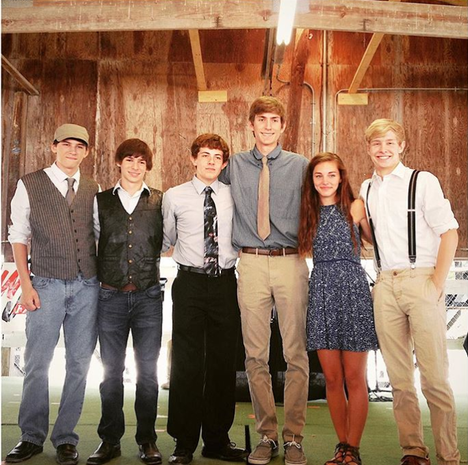

About
Greetings, my name is Ben Thrun I am an Aerospace Engineering Student at Illinois Institute of Technology. I will be graduating in December 2020 with a Bachelor of Science in Aerospace Engineering and a Master of Engineering in Aerospace and Mechanical Engineering. I am currently working as a Graduate Research Assistant under Dr. David Williams, where I am using a miniCTA Hotwire Anemometer and Aeroprobe to model the characteristic traits of a test section in a newly constructed wind tunnel.
My goal is to obtain a career which constantly challenges me and allows me to develop and hone my skills as an engineer. I am very passionate about learning and applying the knowledge I've gained in meaningful ways to my work, which can be demonstrated by the various projects I've worked on. I have been lucky in the experiences and education I've recieved. Everything I have achieved has been through hardwork, detrmination, and proper guidance. Some topics I am interested in include: aeronautics, fluid mechanics, and data modeling. The purpose behind this website is to act as a cool place to show some of the "projects" that I have worked on; as well as a learning experience in HTML and CSS.
Outside of academics my hobbies include: playing musical instruments, camping, playing basketball, and baking! The folk band that I was apart of "Walking for the Gumbo" (pictured to the left), won first place in the Seneca talent show and third place in the Grundy County Fair talent show.